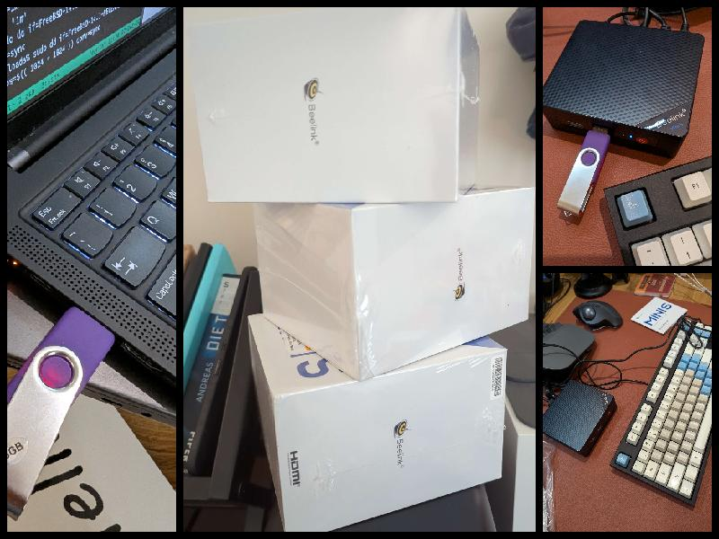
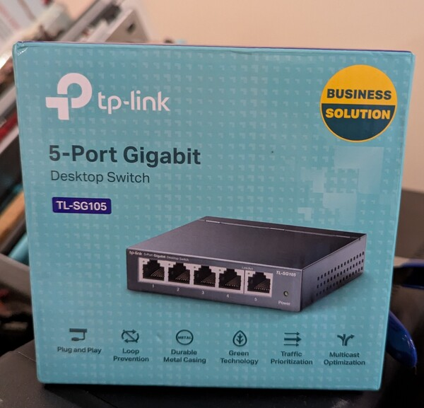
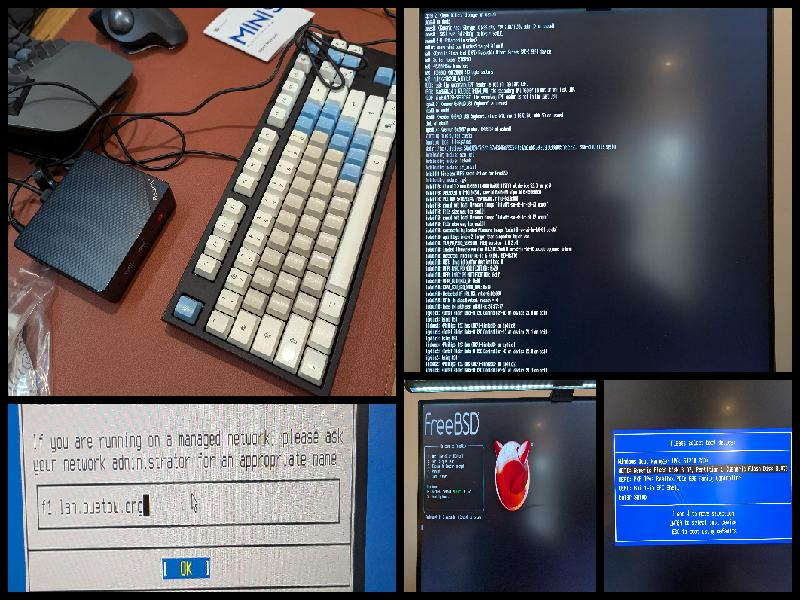
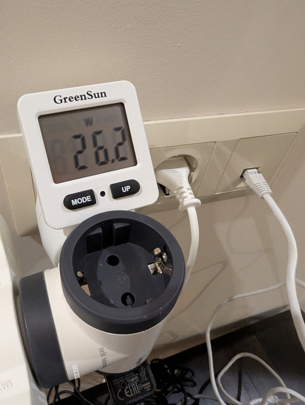
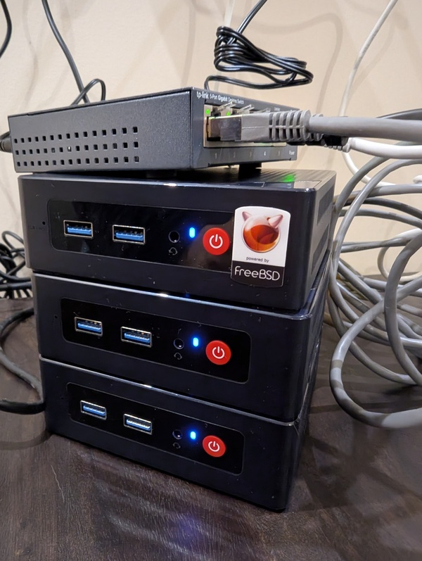

f3s: Kubernetes with FreeBSD - Part 2: Hardware and base installation
Published at 2024-12-02T23:48:21+02:00, last updated Sun 11 Jan 10:30:00 EET 2026
This is the second blog post about my f3s series for my self-hosting demands in my home lab. f3s? The "f" stands for FreeBSD, and the "3s" stands for k3s, the Kubernetes distribution I will use on FreeBSD-based physical machines.
We set the stage last time; this time, we will set up the hardware for this project.
These are all the posts so far:
2024-11-17 f3s: Kubernetes with FreeBSD - Part 1: Setting the stage
2024-12-03 f3s: Kubernetes with FreeBSD - Part 2: Hardware and base installation (You are currently reading this)
2025-02-01 f3s: Kubernetes with FreeBSD - Part 3: Protecting from power cuts
2025-04-05 f3s: Kubernetes with FreeBSD - Part 4: Rocky Linux Bhyve VMs
2025-05-11 f3s: Kubernetes with FreeBSD - Part 5: WireGuard mesh network
2025-07-14 f3s: Kubernetes with FreeBSD - Part 6: Storage
2025-10-02 f3s: Kubernetes with FreeBSD - Part 7: k3s and first pod deployments
2025-12-07 f3s: Kubernetes with FreeBSD - Part 8: Observability
2025-12-14 f3s: Kubernetes with FreeBSD - Part 8b: Distributed Tracing with Tempo
2026-04-02 f3s: Kubernetes with FreeBSD - Part 9: GitOps with ArgoCD

ChatGPT generated logo..
Let's continue...
Table of Contents
Deciding on the hardware
Note that the OpenBSD VMs included in the f3s setup (which will be used later in this blog series for internet ingress - as you know from the first part of this blog series) are already there. These are virtual machines that I rent at OpenBSD Amsterdam and Hetzner.
https://openbsd.amsterdam
https://hetzner.cloud
This means that the FreeBSD boxes need to be covered, which will later be running k3s in Linux VMs via bhyve hypervisor.
I've been considering whether to use Raspberry Pis or look for alternatives. It turns out that complete N100-based mini-computers aren't much more expensive than Raspberry Pi 5s, and they don't require assembly. Furthermore, I like that they are AMD64 and not ARM-based, which increases compatibility with some applications (e.g., I might want to virtualize Windows (via bhyve) on one of those, though that's out of scope for this blog series).
Not ARM but Intel N100
I needed something compact, efficient, and capable enough to handle the demands of a small-scale Kubernetes cluster and preferably something I don't have to assemble a lot. After researching, I decided on the Beelink S12 Pro with Intel N100 CPUs.
Beelink Mini S12 Pro N100 official page
The Intel N100 CPUs are built on the "Alder Lake-N" architecture. These chips are designed to balance performance and energy efficiency well. With four cores, they're more than capable of running multiple containers, even with moderate workloads. Plus, they consume only around 8W of power (ok, that's more than the Pis...), keeping the electricity bill low enough and the setup quiet - perfect for 24/7 operation.

The Beelink comes with the following specs:
- 12th Gen Intel N100 processor, with four cores and four threads, and a maximum frequency of up to 3.4 GHz.
- 16 GB of DDR4 RAM, with a maximum (official) size of 16 GB (but people could install 32 GB on it).
- 500 GB M.2 SSD, with the option to install a 2nd 2.5 SSD drive (which I want to make use of later in this blog series).
- GBit ethernet
- Four USB 3.2 Gen2 ports (maybe I want to mount something externally at some point)
- Dimensions and weight: 115*102*39mm, 280g
- Silent cooling system.
- HDMI output (needed only for the initial installation and maybe for troubleshooting later)
- Auto power on via WoL (may make use of it)
- Wi-Fi (not going to use it)
I bought three (3) of them for the cluster I intend to build.
Beelink unboxing
Unboxing was uneventful. Every Beelink PC came with:
- An AC power adapter
- An HDMI cable
- A VESA mount with screws (not using it as of now)
- Some manuals
- The pre-assembled Beelink PC itself.
- A "Hello" post card (??)
Overall, I love the small form factor.
Network switch
I went with the tp-link mini 5-port switch, as I had a spare one available. That switch will be plugged into my wall ethernet port, which connects directly to my fiber internet router with 100 Mbit/s down and 50 Mbit/s upload speed.

Installing FreeBSD
Base install
First, I downloaded the boot-only ISO of the latest FreeBSD release and dumped it on a USB stick via my Fedora laptop:
[paul@earth]~/Downloads% sudo dd \
if=FreeBSD-14.1-RELEASE-amd64-bootonly.iso \
of=/dev/sda conv=sync
Next, I plugged the Beelinks (one after another) into my monitor via HDMI (the resolution of the FreeBSD text console seems strangely stretched, as I am using the LG Dual Up monitor), connected Ethernet, an external USB keyboard, and the FreeBSD USB stick, and booted the devices up. With F7, I entered the boot menu and selected the USB stick for the FreeBSD installation.
The installation was uneventful. I selected:
- Guided ZFS on root (pool zroot)
- Unencrypted ZFS (I will encrypt separate datasets later; I want it to be able to boot without manual interaction)
- Static IP configuration (to ensure that the boxes always have the same IPs, even after switching the router/DHCP server)
- I decided to enable the SSH daemon, NTP server, and NTP time synchronization at boot, and I also enabled powerd for automatic CPU frequency scaling.
- In addition to root, I added a personal user, paul, whom I placed in the wheel group.
After doing all that three times (once for each Beelink PC), I had three ready-to-use FreeBSD boxes! Their hostnames are f0, f1 and f2!

Latest patch level and customizing /etc/hosts
After the first boot, I upgraded to the latest FreeBSD patch level as follows:
root@f0:~ # freebsd-update fetch
root@f0:~ # freebsd-update install
root@f0:~ # freebsd-update reboot
I also added the following entries for the three FreeBSD boxes to the /etc/hosts file:
root@f0:~ # cat <<END >>/etc/hosts
192.168.1.130 f0 f0.lan f0.lan.buetow.org
192.168.1.131 f1 f1.lan f1.lan.buetow.org
192.168.1.132 f2 f2.lan f2.lan.buetow.org
END
You might wonder why bother using the hosts file? Why not use DNS properly? The reason is simplicity. I don't manage 100 hosts, only a few here and there. Having an OpenWRT router in my home, I could also configure everything there, but maybe I'll do that later. For now, keep it simple and straightforward.
After install
After that, I installed the following additional packages:
root@f0:~ # pkg install helix doas zfs-periodic uptimed
Helix editor
Helix? It's my favourite text editor. I have nothing against vi but like hx (Helix) more!
https://helix-editor.com/
doas
doas? It's a pretty neat (and KISS) replacement for sudo. It has far fewer features than sudo, which is supposed to make it more secure. Its origin is the OpenBSD project. For doas, I accepted the default configuration (where users in the wheel group are allowed to run commands as root):
root@f0:~ # cp /usr/local/etc/doas.conf.sample /usr/local/etc/doas.conf
https://man.openbsd.org/doas
Periodic ZFS snapshotting
zfs-periodic is a nifty tool for automatically creating ZFS snapshots. I decided to go with the following configuration here:
root@f0:~ # cat <<END >>/etc/periodic.conf
daily_zfs_snapshot_enable="YES"
daily_zfs_snapshot_pools="zroot"
daily_zfs_snapshot_keep="7"
weekly_zfs_snapshot_enable="YES"
weekly_zfs_snapshot_pools="zroot"
weekly_zfs_snapshot_keep="5"
monthly_zfs_snapshot_enable="YES"
monthly_zfs_snapshot_pools="zroot"
monthly_zfs_snapshot_keep="6"
END
https://github.com/ross/zfs-periodic
Note: We have not added zdata to the list of snapshot pools. Currently, this pool does not exist yet, but it will be created later in this blog series. zrepl, which we will use for replication, later in this blog series will manage the zdata snapshots.
Uptime tracking
uptimed? I like to track my uptimes. This is how I configured the daemon:
root@f0:~ # cp /usr/local/mimecast/etc/uptimed.conf-dist \
/usr/local/mimecast/etc/uptimed.conf
root@f0:~ # hx /usr/local/mimecast/etc/uptimed.conf
In the Helix editor session, I changed LOG_MAXIMUM_ENTRIES to 0 to keep all uptime entries forever and not cut off at 50 (the default config). After that, I enabled and started uptimed:
root@f0:~ # service uptimed enable
root@f0:~ # service uptimed start
To check the current uptime stats, I can now run uprecords:
root@f0:~ # uprecords
# Uptime | System Boot up
----------------------------+---------------------------------------------------
-> 1 0 days, 00:07:34 | FreeBSD 14.1-RELEASE Mon Dec 2 12:21:44 2024
----------------------------+---------------------------------------------------
NewRec 0 days, 00:07:33 | since Mon Dec 2 12:21:44 2024
up 0 days, 00:07:34 | since Mon Dec 2 12:21:44 2024
down 0 days, 00:00:00 | since Mon Dec 2 12:21:44 2024
%up 100.000 | since Mon Dec 2 12:21:44 2024
This is how I track the uptimes for all of my host:
Unveiling guprecords.raku: Global Uptime Records with Raku-
https://github.com/rpodgorny/uptimed
Hardware check
Ethernet
Works. Nothing eventful, really. It's a cheap Realtek chip, but it will do what it is supposed to do.
paul@f0:~ % ifconfig re0
re0: flags=1008843<UP,BROADCAST,RUNNING,SIMPLEX,MULTICAST,LOWER_UP> metric 0 mtu 1500
options=8209b<RXCSUM,TXCSUM,VLAN_MTU,VLAN_HWTAGGING,VLAN_HWCSUM,WOL_MAGIC,LINKSTATE>
ether e8:ff:1e:d7:1c:ac
inet 192.168.1.130 netmask 0xffffff00 broadcast 192.168.1.255
inet6 fe80::eaff:1eff:fed7:1cac%re0 prefixlen 64 scopeid 0x1
inet6 fd22:c702:acb7:0:eaff:1eff:fed7:1cac prefixlen 64 detached autoconf
inet6 2a01:5a8:304:1d5c:eaff:1eff:fed7:1cac prefixlen 64 autoconf pltime 10800 vltime 14400
media: Ethernet autoselect (1000baseT <full-duplex>)
status: active
nd6 options=23<PERFORMNUD,ACCEPT_RTADV,AUTO_LINKLOCAL>
RAM
All there:
paul@f0:~ % sysctl hw.physmem
hw.physmem: 16902905856
CPUs
They work:
paul@f0:~ % sysctl dev.cpu | grep freq:
dev.cpu.3.freq: 705
dev.cpu.2.freq: 705
dev.cpu.1.freq: 604
dev.cpu.0.freq: 604
CPU throttling
With powerd running, CPU freq is dowthrottled when the box isn't jam-packed. To stress it a bit, I run ubench to see the frequencies being unthrottled again:
paul@f0:~ % doas pkg install ubench
paul@f0:~ % rehash # For tcsh to find the newly installed command
paul@f0:~ % ubench &
paul@f0:~ % sysctl dev.cpu | grep freq:
dev.cpu.3.freq: 2922
dev.cpu.2.freq: 2922
dev.cpu.1.freq: 2923
dev.cpu.0.freq: 2922
Idle, all three Beelinks plus the switch consumed 26.2W. But with ubench stressing all the CPUs, it went up to 38.8W.

Wake-on-LAN Setup
Updated Sun 11 Jan 10:30:00 EET 2026
As mentioned in the hardware specs above, the Beelink S12 Pro supports Wake-on-LAN (WoL), which allows me to remotely power on the machines over the network. This is particularly useful since I don't need all three machines running 24/7, and I can save power by shutting them down when not needed and waking them up on demand.
The good news is that FreeBSD already has WoL support enabled by default on the Realtek network interface, as evidenced by the WOL_MAGIC option shown in the ifconfig re0 output above (line 215).
Setting up WoL on the laptop
To wake the Beelinks from my Fedora laptop (earth), I installed the wol package:
[paul@earth]~% sudo dnf install -y wol
Next, I created a simple script (~/bin/wol-f3s) to wake and shutdown the machines:
#!/bin/bash
# Wake-on-LAN and shutdown script for f3s cluster (f0, f1, f2)
# MAC addresses
F0_MAC="e8:ff:1e:d7:1c:ac" # f0 (192.168.1.130)
F1_MAC="e8:ff:1e:d7:1e:44" # f1 (192.168.1.131)
F2_MAC="e8:ff:1e:d7:1c:a0" # f2 (192.168.1.132)
# IP addresses
F0_IP="192.168.1.130"
F1_IP="192.168.1.131"
F2_IP="192.168.1.132"
# SSH user
SSH_USER="paul"
# Broadcast address for your LAN
BROADCAST="192.168.1.255"
wake() {
local name=$1
local mac=$2
echo "Sending WoL packet to $name ($mac)..."
wol -i "$BROADCAST" "$mac"
}
shutdown_host() {
local name=$1
local ip=$2
echo "Shutting down $name ($ip)..."
ssh -o ConnectTimeout=5 "$SSH_USER@$ip" "doas poweroff" 2>/dev/null && \
echo " ✓ Shutdown command sent to $name" || \
echo " ✗ Failed to reach $name (already down?)"
}
ACTION="${1:-all}"
case "$ACTION" in
f0) wake "f0" "$F0_MAC" ;;
f1) wake "f1" "$F1_MAC" ;;
f2) wake "f2" "$F2_MAC" ;;
all|"")
wake "f0" "$F0_MAC"
wake "f1" "$F1_MAC"
wake "f2" "$F2_MAC"
;;
shutdown|poweroff|down)
shutdown_host "f0" "$F0_IP"
shutdown_host "f1" "$F1_IP"
shutdown_host "f2" "$F2_IP"
echo ""
echo "✓ Shutdown commands sent to all machines."
exit 0
;;
*)
echo "Usage: $0 [f0|f1|f2|all|shutdown]"
exit 1
;;
esac
echo ""
echo "✓ WoL packets sent. Machines should boot in a few seconds."
After making the script executable with chmod +x ~/bin/wol-f3s, I can now control the machines with simple commands:
[paul@earth]~% wol-f3s # Wake all three
[paul@earth]~% wol-f3s f0 # Wake only f0
[paul@earth]~% wol-f3s shutdown # Shutdown all three via SSH
Testing WoL and Shutdown
To test the setup, I shutdown all three machines using the script's shutdown function:
[paul@earth]~% wol-f3s shutdown
Shutting down f0 (192.168.1.130)...
✓ Shutdown command sent to f0
Shutting down f1 (192.168.1.131)...
✓ Shutdown command sent to f1
Shutting down f2 (192.168.1.132)...
✓ Shutdown command sent to f2
✓ Shutdown commands sent to all machines.
After waiting for them to fully power down (about 1 minute), I sent the WoL magic packets:
[paul@earth]~% wol-f3s
Sending WoL packet to f0 (e8:ff:1e:d7:1c:ac)...
Waking up e8:ff:1e:d7:1c:ac...
Sending WoL packet to f1 (e8:ff:1e:d7:1e:44)...
Waking up e8:ff:1e:d7:1e:44...
Sending WoL packet to f2 (e8:ff:1e:d7:1c:a0)...
Waking up e8:ff:1e:d7:1c:a0...
✓ WoL packets sent. Machines should boot in a few seconds.
Within 30-50 seconds, all three machines successfully booted up and became accessible via SSH!
This also works fine over WiFi, by the way — as long as the laptop and the Beelinks are on the same local network, the router bridges everything. And wol-f3s shutdown does the reverse (SSH + doas poweroff), so I can spin the whole cluster up and down pretty quickly.
BIOS Configuration
For WoL to work reliably, make sure to check the BIOS settings on each Beelink:
- Enable "Wake on LAN" (usually under Power Management)
- Disable "ERP Support" or "ErP Ready" (this can prevent WoL from working)
- Enable "Power on by PCI-E" or "Wake on PCI-E"
The exact menu names vary, but these settings are typically found in the Power Management or Advanced sections of the BIOS.
Conclusion
Honestly, the Beelink S12 Pro with the N100 is kind of perfect for this — tiny, cheap, sips power, and runs both Linux and FreeBSD without drama. I'm pretty happy with it.

To ease cable management, I need to get shorter ethernet cables. I will place the tower on my shelf, where most of the cables will be hidden (together with a UPS, which will also be added to the setup).
Read the next post of this series:
f3s: Kubernetes with FreeBSD - Part 3: Protecting from power cuts
Other *BSD-related posts:
2026-04-02 f3s: Kubernetes with FreeBSD - Part 9: GitOps with ArgoCD
2025-12-14 f3s: Kubernetes with FreeBSD - Part 8b: Distributed Tracing with Tempo
2025-12-07 f3s: Kubernetes with FreeBSD - Part 8: Observability
2025-10-02 f3s: Kubernetes with FreeBSD - Part 7: k3s and first pod deployments
2025-07-14 f3s: Kubernetes with FreeBSD - Part 6: Storage
2025-05-11 f3s: Kubernetes with FreeBSD - Part 5: WireGuard mesh network
2025-04-05 f3s: Kubernetes with FreeBSD - Part 4: Rocky Linux Bhyve VMs
2025-02-01 f3s: Kubernetes with FreeBSD - Part 3: Protecting from power cuts
2024-12-03 f3s: Kubernetes with FreeBSD - Part 2: Hardware and base installation (You are currently reading this)
2024-11-17 f3s: Kubernetes with FreeBSD - Part 1: Setting the stage
2024-04-01 KISS high-availability with OpenBSD
2024-01-13 One reason why I love OpenBSD
2022-10-30 Installing DTail on OpenBSD
2022-07-30 Let's Encrypt with OpenBSD and Rex
2016-04-09 Jails and ZFS with Puppet on FreeBSD
E-Mail your comments to paul@nospam.buetow.org :-)
Back to the main site